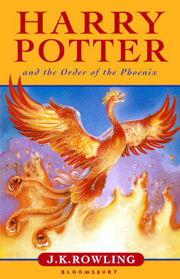

Harry Potter Book Series
Harry Potter and the Philosopher's Stone

Harry Potter and the Philosopher's Stone is a fantasy novel written by British author J. K. Rowling. The first novel in the Harry Potter series and Rowling's debut novel, it follows Harry Potter, a young wizard who discovers his magical heritage on his eleventh birthday, when he receives a letter of acceptance to Hogwarts School of Witchcraft and Wizardry. Harry makes close friends and a few enemies during his first year at the school and with the help of his friends, Ron Weasley and Hermione Granger, he faces an attempted comeback by the dark wizard Lord Voldemort, who killed Harry's parents, but failed to kill Harry when he was just 15 months old.
Harry Potter and the Chamber of Secrets

Harry Potter and the Chamber of Secrets is a fantasy novel written by British author J. K. Rowling and the second novel in the Harry Potter series. The plot follows Harry's second year at Hogwarts School of Witchcraft and Wizardry, during which a series of messages on the walls of the school's corridors warn that the "Chamber of Secrets" has been opened and that the "heir of Slytherin" would kill all pupils who do not come from all-magical families. These threats are found after attacks that leave residents of the school petrified. Throughout the year, Harry and his friends Ron and Hermione investigate the attacks.
Harry Potter and the Prisoner of Azkaban

Harry Potter and the Prisoner of Azkaban is a fantasy novel written by British author J. K. Rowling and is the third in the Harry Potter series. The book follows Harry Potter, a young wizard, in his third year at Hogwarts School of Witchcraft and Wizardry. Along with friends Ronald Weasley and Hermione Granger, Harry investigates Sirius Black, an escaped prisoner from Azkaban, the wizard prison, believed to be one of Lord Voldemort's old allies.
Harry Potter and the Goblet of Fire
Harry Potter and the Goblet of Fire is a fantasy novel written by British author J. K. Rowling and the fourth novel in the Harry Potter series. It follows Harry Potter, a wizard in his fourth year at Hogwarts School of Witchcraft and Wizardry, and the mystery surrounding the entry of Harry's name into the Triwizard Tournament, in which he is forced to compete.
Harry Potter and the Order of the Phoenix
Harry Potter and the Order of the Phoenix is a fantasy novel written by British author J. K. Rowling and the fifth novel in the Harry Potter series. It follows Harry Potter's struggles through his fifth year at Hogwarts School of Witchcraft and Wizardry, including the surreptitious return of the antagonist Lord Voldemort, O.W.L. exams, and an obstructive Ministry of Magic.
Harry Potter and the Half-Blood Prince
Harry Potter and the Half-Blood Prince is a fantasy novel written by British author J. K. Rowling and the sixth and penultimate novel in the Harry Potter series. Set during Harry Potter's sixth year at Hogwarts, the novel explores the past of the boy wizard's nemesis, Lord Voldemort, and Harry's preparations for the final battle against Voldemort alongside his headmaster and mentor Albus Dumbledore.
Harry Potter and the Deathly Hallows

Harry Potter and the Deathly Hallows is a fantasy novel written by British author J. K. Rowling and the seventh and final novel in the Harry Potter series. It was released on 21 July 2007 in the United Kingdom by Bloomsbury Publishing, in the United States by Scholastic, and in Canada by Raincoast Books. The novel chronicles the events directly following Harry Potter and the Half-Blood Prince (2005) and the final confrontation between the wizards Harry Potter and Lord Voldemort.